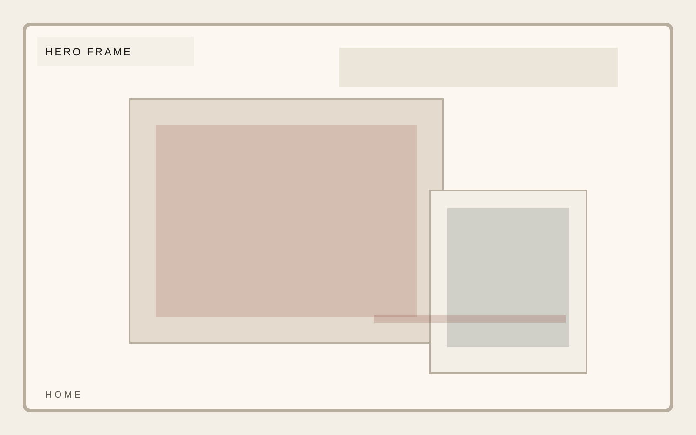
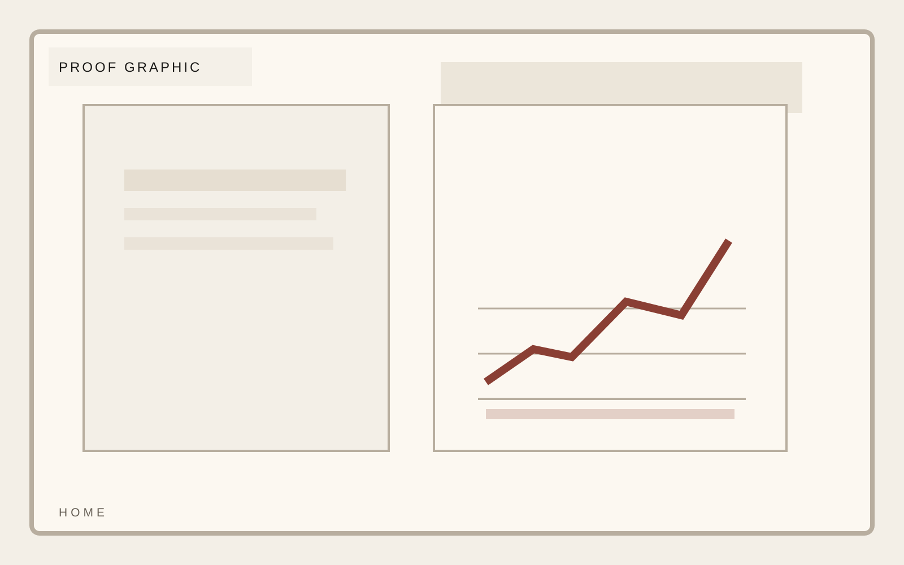

Work mode
Hands-on strategic operator
Independent consultancy
Clarity is a design problem before it is an operating problem.
A consultancy template that prioritizes argument, proof, and a premium reading experience over bloated agency-site patterns. The best consultancy pages read like a point of view with proof behind it.

Independent consultancy
The offer should be framed as a narrow, high-conviction intervention. This page gets stronger the more specific it becomes.
Independent consultancy
Proof should feel like evidence from actual operating work. Charts and statements should reinforce clarity, not mimic startup dashboards.

Independent consultancy
Engagement model should make scope, cadence, and access feel concrete. The best version reads like a working agreement.
Independent consultancy
Bio needs enough detail to establish credibility and enough restraint to avoid feeling promotional.
Independent consultancy
Merit shapes contact as argument, evidence, and clarity of offer, keeping the reading experience spare, premium, and direct. This home page stays consistent with the template system while giving this section its own visual weight.